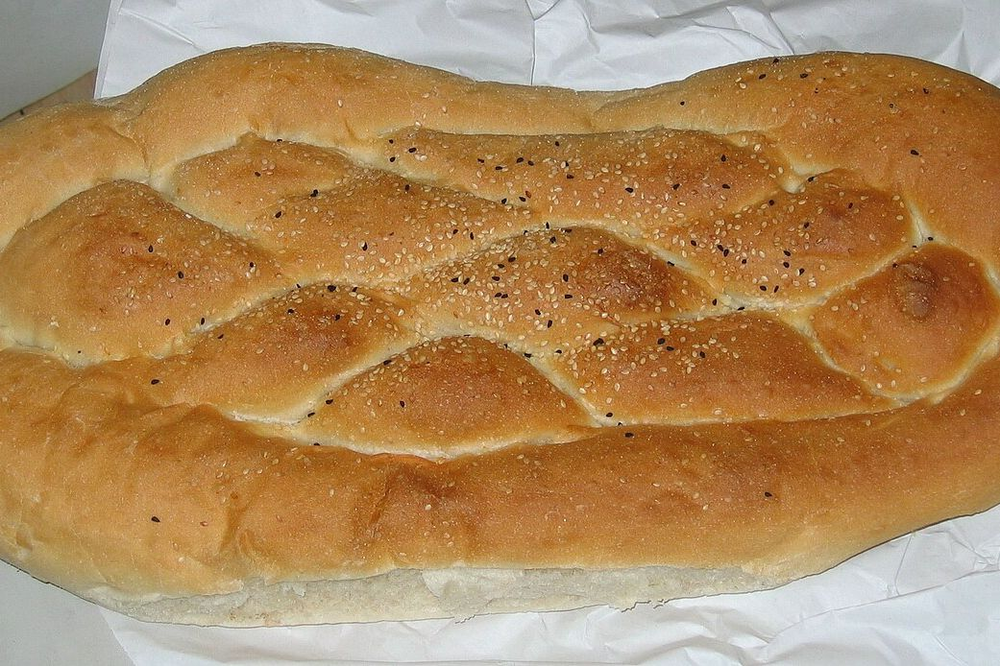
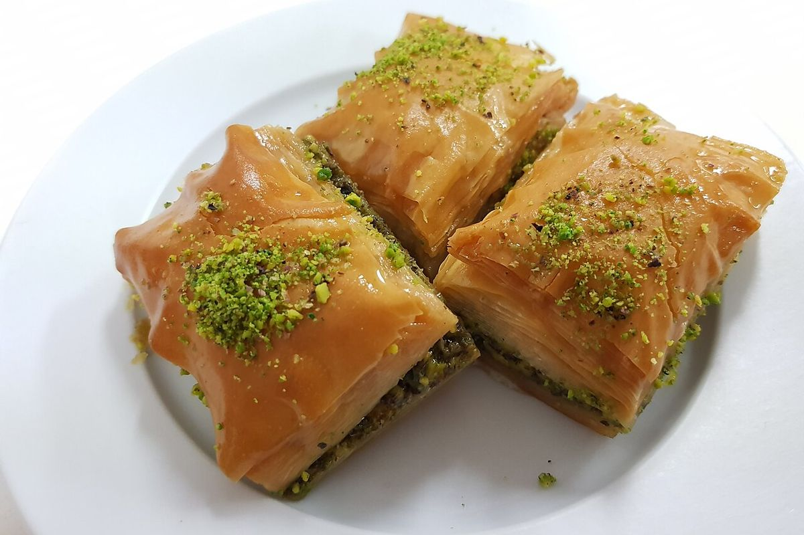

Döner wrap
Thin slices from the spit in warm flatbread with salad and garlic sauce.
Partner story · with us since March 2026
Döner from the vertical spit, hand-folded mantı and baklava with pistachios on Turan Avenue. Every evening the food that is left goes into surprise bags instead of the bin.
Döner, mantı and baklava, and no leftovers in the bin.
Our story
Turkish Food opened on Turan Avenue in 2024. Our chef bakes bread for pide every morning and folds mantı by hand, so at closing time there was always something left: half a tray of baklava, a few portions of mantı, the last loaves of bread.
Most of it went in the bin. Now we pack it into surprise bags. Students from the university next door come for them every night, and many of them come back for a full dinner.
“We throw away almost nothing now, and we got a hundred new regulars.”

Inside the bag
We never know until closing time, and that is the fun. These things end up there most often.
Thin slices from the spit in warm flatbread with salad and garlic sauce.
Tiny lamb dumplings. Warm them up and add yogurt at home.
Thin flatbread with minced meat and herbs. Roll it up with lemon.
The last loaves from our oven, still soft the next morning.
Pastry with pistachios and syrup: the part everybody hopes for.
A cold yogurt drink, if a few bottles are left in the fridge.
Tonight
Reserve in the app and pick up between 22:00 and 22:45.
 2 left
2 left
Turkish Food
1 490 ₸ 4 500 ₸

4 leftTurkish Food
590 ₸ 1 800 ₸

Sold outTurkish Food
990 ₸ 3 000 ₸
Reviews
Aruzhan ★★★★★
Two portions of mantı, half a pide and baklava for 1 490 ₸. Dinner for me and my roommate.
Daniyar ★★★★★
I come every Friday after classes. Never the same bag twice, never a bad one.
Madina ★★★★☆
Very tasty, but come on time: at 22:45 they really close the door.
Own a café too?
Turkish Food started with three bags a night. Setup takes five minutes.
Become a partner